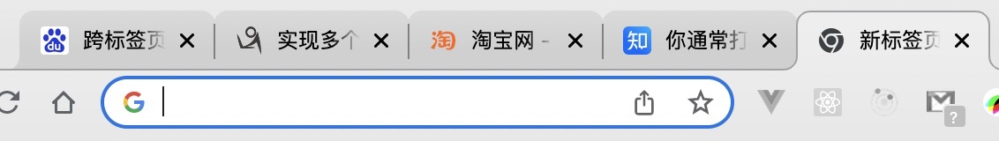

什么是跨标签页通信

一个标签页能够发送信息给另一个标签页。
跨标签页通信常见方案
BroadCast Channel(同源)
BroadCast Channel 可以帮我们创建一个用于广播的通信频道。当所有页面都监听同一频道的消息时，其中某一个页面通过它发送的消息就会被其他所有页面收到。但是前提是同源页面。
index.html
<body>
<input type="text" name="" id="content" />
<button id="btn">发送数据</button>
<script>
const content = document.querySelector("#content");
const btn = document.querySelector("#btn");
// 创建一个名字是 load1 的 BroadcastChannel 对象
var BroadcastChanne1 = new BroadcastChannel("load1");
btn.onclick = function () {
BroadcastChanne1.postMessage({
value: content.value,
});
};
</script>
</body>
index2.html
<body>
<script>
var BroadcastChanne1 = new BroadcastChannel("load1"); //要接收到数据，BroadcastChannel对象的名字必须相同
BroadcastChanne1.onmessage = function (e) {
console.log(e.data); //发送的数据
};
</script>
</body>
在上面的代码中，我们在页面一注册了一个名为 load1 的 BroadcastChannel 对象，之后所有的页面也创建同名的 BroadcastChannel 对象，然后就可以通过 postMessage 和 onmessage 方法进行相互通信了。
Service Worker
Service Worker 实际上是浏览器和服务器之间的代理服务器，它最大的特点是在页面中注册并安装成功后，运行于浏览器后台，不受页面刷新的影响，可以监听和截拦作用域范围内所有页面的 HTTP 请求。
Service Worker 的目的在于离线缓存，转发请求和网络代理。
index.html
<body>
<h1>页面一</h1>
<button>发送</button>
<script>
navigator.serviceWorker.register("sw.js").then(() => {
console.log("service worker 注册成功");
});
document.querySelector("button").onclick = function () {
navigator.serviceWorker.controller.postMessage("hello");
};
</script>
</body>
index2.html
<body>
<h1>页面二</h1>
<script>
navigator.serviceWorker.register("sw.js").then(() => {
console.log("service worker 注册成功");
});
navigator.serviceWorker.onmessage = function ({ data }) {
console.log(data);
};
</script>
</body>
sw.js
self.addEventListener("message", async (event) => {
const clients = await self.clients.matchAll();
clients.forEach(function (client) {
client.postMessage(event.data);
});
});
LocalStorage window.onstorage 监听(同源)
在 Web Storage 中，每次将一个值存储到本地存储时，就会触发一个 storage 事件。
由事件监听器发送给回调函数的事件对象有几个自动填充的属性如下：
- key：告诉我们被修改的条目的键。
- newValue：告诉我们被修改后的新值。
- oldValue：告诉我们修改前的值。
- storageArea：指向事件监听对应的 Storage 对象。
- url：原始触发 storage 事件的那个网页的地址。
注意：这个事件只在同一域下的任何窗口或者标签上触发，并且只在被存储的条目改变时触发。
示例如下：这里我们需要打开服务器进行演示，本地文件无法触发 storage 事件
index.html
<body>
<script>
localStorage.name = "谢杰";
localStorage.age = 20;
console.log("信息已经设置!");
</script>
</body>
在上面的代码中，我们在该页面下设置了两个 localStorage 本地数据。
index2.html
<body>
<script>
let name = localStorage.getItem("name");
let age = localStorage.age;
console.log(`姓名为${name},年龄为${age}`);
window.addEventListener(
"storage",
(e) => {
console.log(`${e.key}从${e.oldValue}修改为${e.newValue}`);
console.log(e.storageArea);
console.log(`被改变的url为${e.url}`);
},
true
);
</script>
</body>
在该页面中我们安装了一个 storage 的事件监听器，安装之后只要是同一域下面的其他 storage 值发生改变，该页面下面的 storage 事件就会被触发。
Shared Worker 定时器轮询（ setInterval ） 同源
SharedWorker 接口代表一种特定类型的 worker，可以从几个浏览上下文中访问，例如几个窗口、iframe 或其他 worker。它们实现一个不同于普通 worker 的接口，具有不同的全局作用域，如果要使 SharedWorker 连接到多个不同的页面，这些页面必须是同源的（相同的协议、host 以及端口）。
index.html
<body>
<input type="text" name="" id="content" placeholder="请输入要发送的信息" />
<button id="btn">发送</button>
<script>
const content = document.querySelector("#content");
const btn = document.querySelector("#btn");
const worker = new SharedWorker("worker.js");
btn.onclick = function () {
worker.port.postMessage(content.value);
};
</script>
</body>
index2.html
<body>
<script>
const btn = document.querySelector("#btn");
var worker = new SharedWorker("worker.js");
worker.port.start();
worker.port.addEventListener(
"message",
(e) => {
if (e.data) {
console.log("来自worker的数据：", e.data);
}
},
false
);
setInterval(function () {
// 获取和发送消息都是调用 postMessage 方法，我这里约定的是传递'get'表示获取数据。
worker.port.postMessage("get");
}, 1000);
</script>
</body>
worker.js
var data = "";
onconnect = function (e) {
var port = e.ports[0];
port.onmessage = function (e) {
// 如果是 get 则返回数据给客户端
if (e.data === "get") {
port.postMessage(data);
data = "";
} else {
// 否则把数据保存
data = e.data;
}
};
};
IndexedDB 定时器轮询（ setInterval ）
IndexedDB 是一种底层 API，用于在客户端存储大量的结构化数据（也包括文件/二进制大型对象（blobs））。该 API 使用索引实现对数据的高性能搜索。
通过对 IndexedDB 进行定时器轮询的方式，我们也能够实现跨标签页的通信。
index.html
<body>
<h1>新增学生</h1>
<div>
<span>学生学号：</span>
<input type="text" name="stuId" id="stuId" />
</div>
<div>
<span>学生姓名：</span>
<input type="text" name="stuName" id="stuName" />
</div>
<div>
<span>学生年龄：</span>
<input type="text" name="stuAge" id="stuAge" />
</div>
<button id="addBtn">新增学生</button>
<script src="./db.js"></script>
<script>
openDB("stuDB", 1).then((db) => {
document.getElementById("addBtn").onclick = function () {
addData(db, "stu", {
stuId: stuId.value,
stuName: stuName.value,
stuAge: stuAge.value,
});
stuId.value = stuName.value = stuAge.value = "";
};
});
</script>
</body>
index2.html
<body>
<h1>学生表</h1>
<table id="tab"></table>
<script src="./db.js"></script>
<script>
function render(arr) {
let tab = document.querySelector("#tab");
tab.innerHTML = `
<tr>
<td>学号</td>
<td>姓名</td>
<td>年龄</td>
</tr>
`;
var str = arr
.map((item) => {
return `
<tr>
<td>${item.stuId}</td>
<td>${item.stuName}</td>
<td>${item.stuAge}</td>
</tr>
`;
})
.join("");
tab.innerHTML += str;
}
async function renderTable() {
let db = await openDB("stuDB", 1);
let stuInfo = await getDataByKey(db, "stu");
render(stuInfo);
setInterval(async function () {
let stuInfo2 = await getDataByKey(db, "stu");
if (stuInfo2.length !== stuInfo.length) {
stuInfo = stuInfo2;
render(stuInfo);
}
}, 1000);
}
renderTable();
</script>
</body>
db.js
/**
* 打开数据库
* @param {object} dbName 数据库的名字
* @param {string} storeName 仓库名称
* @param {string} version 数据库的版本
* @return {object} 该函数会返回一个数据库实例
*/
function openDB(dbName, version = 1) {
return new Promise((resolve, reject) => {
var db; // 存储创建的数据库
// 打开数据库，若没有则会创建
const request = indexedDB.open(dbName, version);
// 数据库打开成功回调
request.onsuccess = function (event) {
db = event.target.result; // 存储数据库对象
console.log("数据库打开成功");
resolve(db);
};
// 数据库打开失败的回调
request.onerror = function (event) {
console.log("数据库打开报错");
};
// 数据库有更新时候的回调
request.onupgradeneeded = function (event) {
// 数据库创建或升级的时候会触发
console.log("onupgradeneeded");
db = event.target.result; // 存储数据库对象
var objectStore;
// 创建存储库
objectStore = db.createObjectStore("stu", {
keyPath: "stuId", // 这是主键
autoIncrement: true, // 实现自增
});
// 创建索引，在后面查询数据的时候可以根据索引查
objectStore.createIndex("stuId", "stuId", { unique: true });
objectStore.createIndex("stuName", "stuName", { unique: false });
objectStore.createIndex("stuAge", "stuAge", { unique: false });
};
});
}
/**
* 新增数据
* @param {object} db 数据库实例
* @param {string} storeName 仓库名称
* @param {string} data 数据
*/
function addData(db, storeName, data) {
var request = db
.transaction([storeName], "readwrite") // 事务对象 指定表格名称和操作模式（"只读"或"读写"）
.objectStore(storeName) // 仓库对象
.add(data);
request.onsuccess = function (event) {
console.log("数据写入成功");
};
request.onerror = function (event) {
console.log("数据写入失败");
};
}
/**
* 通过主键读取数据
* @param {object} db 数据库实例
* @param {string} storeName 仓库名称
* @param {string} key 主键值
*/
function getDataByKey(db, storeName, key) {
return new Promise((resolve, reject) => {
var transaction = db.transaction([storeName]); // 事务
var objectStore = transaction.objectStore(storeName); // 仓库对象
var request = objectStore.getAll(); // 通过主键获取数据
request.onerror = function (event) {
console.log("事务失败");
};
request.onsuccess = function (event) {
// console.log("主键查询结果: ", request.result);
resolve(request.result);
};
});
}
cookie 定时器轮询（ setInterval ）
我们同样可以通过定时器轮询的方式来监听 Cookie 的变化，从而达到一个多标签页通信的目的。
index.html
<body>
<script>
// 设置 cookie
document.cookie = "name=zhangsan";
console.log("cookie 已经设置");
</script>
</body>
index2.html
<body>
<script>
// 获取当前的 cookie
var cookie = document.cookie;
console.log(`当前的 cookie 值为 ${document.cookie}`);
setInterval(function () {
if (cookie !== document.cookie) {
console.log(
`cookie 信息已经改变，最新的 cookie 值为${document.cookie}`
);
cookie = document.cookie;
console.log("最新的 cookie 值已经保存");
}
}, 1000);
</script>
</body>
在上面的代码中，我们为 index2.html 设置了一个定时器，之后每过一秒钟都会重新去读取本地的 Cookie 信息，并比较和之前获取到的 Cookie 信息有没有变化，如果有变化就进行更新操作。
window.open、window.postMessage
MDN 上是这样介绍 window.postMessage 的：
window.postMessage( ) 方法可以安全地实现跨源通信。通常，对于两个不同页面的脚本，只有当执行它们的页面位于具有相同的协议（通常为 https），端口号（443 为 https 的默认值），以及主机 (两个页面的模数 Document.domain 设置为相同的值) 时，这两个脚本才能相互通信。window.postMessage( ) 方法提供了一种受控机制来规避此限制，只要正确的使用，这种方法就很安全。
从广义上讲，一个窗口可以获得对另一个窗口的引用（比如 targetWindow = window.opener），然后在窗口上调用 targetWindow.postMessage( ) 方法分发一个 MessageEvent 消息。接收消息的窗口可以根据需要自由处理此事件 (en-US)。传递给 window.postMessage( ) 的参数（比如 message ）将通过消息事件对象暴露给接收消息的窗口。
这种方式可以让页面给 iframe 之间有通信
window.onload = function () {
var iframe = document.getElementById("myFrame");
var message = { type: "greeting", text: "Hello from the parent page!" };
// 向iframe发送消息，指定目标源为iframe所在页面的源
iframe.contentWindow.postMessage(message, "http://example.com");
};
index.html
<body>
<button id="popBtn">弹出新的窗口</button>
<input type="text" name="" id="content" />
<button id="btn">发送数据</button>
<script>
const popBtn = document.querySelector("#popBtn");
const content = document.querySelector("#content");
const btn = document.querySelector("#btn");
let opener = null; // 保存打开窗口的引用
popBtn.onclick = function () {
opener = window.open(
"index2.html",
"123",
"height=400,width=400,top=10,resizable=yes"
);
};
btn.onclick = function () {
let data = {
value: content.value,
};
// data 代表的是发送是数据，origin 用来限制访问来源，也可以用 * 代替
opener.postMessage(data, "*");
};
</script>
</body>
index2.html
<body>
<p>这是弹出页面</p>
<script>
window.addEventListener(
"message",
function (e) {
console.log(e.data);
},
false
); //事件监听
</script>
</body>
在上面的代码中，我们在页面一通过 open 方法打开页面二，然后通过 postMessage 的方式向页面二传递信息。页面二通过监听 message 事件来接收信息。
Websocket
WebSocket 协议在 2008 年诞生，2011 年成为国际标准。所有浏览器都已经支持了。
它的最大特点就是，服务器可以主动向客户端推送信息，客户端也可以主动向服务器发送信息，是真正的双向平等对话，属于服务器推送技术的一种。
server.js
// 初始化一个 node 项目 npm init -y
// 安装依赖 npm i -save ws
// 获得 WebSocketServer 类型
var WebSocketServer = require("ws").Server;
// 创建 WebSocketServer 对象实例，监听指定端口
var wss = new WebSocketServer({
port: 8080,
});
// 创建保存所有已连接到服务器的客户端对象的数组
var clients = [];
// 为服务器添加 connection 事件监听，当有客户端连接到服务端时，立刻将客户端对象保存进数组中
wss.on("connection", function (client) {
// 如果是首次连接
if (clients.indexOf(client) === -1) {
// 就将当前连接保存到数组备用
clients.push(client);
console.log("有" + clients.length + "客户端在线");
// 为每个 client 对象绑定 message 事件，当某个客户端发来消息时，自动触发
client.on("message", function (msg) {
console.log(msg, typeof msg);
console.log("收到消息" + msg);
// 遍历 clients 数组中每个其他客户端对象，并发送消息给其他客户端
for (var c of clients) {
// 排除自己这个客户端连接
if (c !== client) {
// 把消息发给别人
c.send(msg.toString());
}
}
});
// 当客户端断开连接时触发该事件
client.onclose = function () {
var index = clients.indexOf(this);
clients.splice(index, 1);
console.log("有" + clients.length + "客户端在线");
};
}
});
console.log("服务器已启动...");
在上面的代码中，我们创建了一个 Websocket 服务器，监听 8080 端口。每一个连接到该服务器的客户端，都会触发服务器的 connection 事件，并且会将此客户端连接实例作为回调函数的参数传入。
我们将所有的客户端连接实例保存到一个数组里面。为该实例绑定了 message 和 close 事件，当某个客户端发来消息时，自动触发 message 事件，然后遍历 clients 数组中每个其他客户端对象，并发送消息给其他客户端。
close 事件在客户端断开连接时会触发，我们要做的事情就是从数组中删除该连接。
index.html
<body>
<!-- 这个页面是用来发送信息的 -->
<input type="text" id="msg" />
<button id="send">发送</button>
<script>
// 建立到服务端 webSoket 连接
var ws = new WebSocket("ws://localhost:8080");
send.onclick = function () {
// 如果 msg 输入框内容不是空的
if (msg.value.trim() != "") {
// 将 msg 输入框中的内容发送给服务器
ws.send(msg.value.trim());
}
};
// 断开 websoket 连接
window.onbeforeunload = function () {
ws.close();
};
</script>
</body>
index2.html
<body>
<script>
//建立到服务端webSoket连接
var ws = new WebSocket("ws://localhost:8080");
var count = 1;
ws.onopen = function (event) {
// 当有消息发过来时，就将消息放到显示元素上
ws.onmessage = function (event) {
var oP = document.createElement("p");
oP.innerHTML = `第${count}次接收到的消息：${event.data}`;
document.body.appendChild(oP);
count++;
};
};
// 断开 websoket 连接
window.onbeforeunload = function () {
ws.close();
};
</script>
</body>